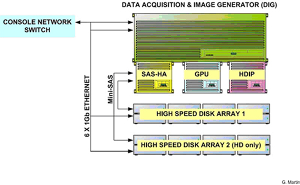
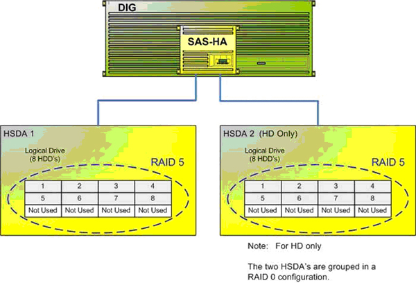
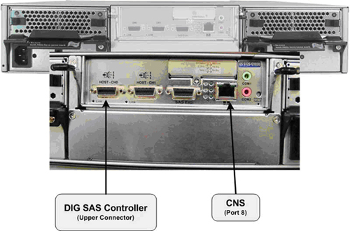

Operating Documentation
Direction 5307452-8EN, Rev# 4
Discovery CT750 HD Service Methods - Adv
Operating Documentation |
| Last Revised: | 08 July 2008 |
Illustration 1: High Speed Disk Array

The HSDA is a Commercial Off The Shelf (COTS) disk array configured specially for GE Healthcare by a third party vendor. The primary purpose of the HSDA is to save raw scan data coming from the Data Acquisition Subsystem (DAS) which is transmitted across the Slip Ring to the DIG Computer. The DIG Computer saves the raw scan data to the HSDA for later image generation and reconstruction.
| NOTE: | With High Definition Systems a second HSDA is needed to handle the high data rates. |
Illustration 2: HSDA Interconnect Diagram

The following is a brief theory overview of the hardware and software associated with the HSDA.
The HSDA resides in the Reconstruction Engine component group of the GOC 6 Console. The HSDA is a Serial Attached SCSI (SAS) RAID disk array utilizing Serial ATA (SATA II) disk drives. The array is configured in a RAID 5 (striped set of drives with distributed parity) for increased system reliability and speed.
Basic Configuration:
1 – 12 Bay Chassis with RAID Controller Module
8 – 250 GB SATA II Hard Disk Drives
2 – 120V AC Power Supply Modules
2 – Fan Cooling Modules
| NOTE: | The bottom row of HSDA HDD Trays are empty. No HDDs will be installed in this row. |
Illustration 3: HSDA Component Diagram

The HSDA RAID Controller Module processes I/O requests and RAID parity computations for data protection for the HDDs included in the array. This module also supplies the Serial Attached SCSI (SAS) input interface for the DIG Computer. The RAID 5 configuration is controlled by this module.
The HSDA is equipped with an Ethernet port for remote control and monitoring of the HSDA functions.
The HSDA utilizes eight (8) Serial ATA (SATA) Hard Disk Drives (HDD) for saving raw scan data in a redundant format (RAID 5). By utilizing a RAID 5 configuration in the HSDA, single HDD failure will not cause immediate down time. The array will continue working until such time where the failed HDD can be replaced. (See RAID definitions that follow.)
Illustration 4: HSDA HDD Block Diagram

RAID 5 Definition: Striped set with distributed parity (utilized within HSDA).
Distributed parity requires all but one drive to be present to operate; drive failure requires replacement, but the array is not destroyed by a single drive failure. Upon drive failure, any subsequent reads can be calculated from the distributed parity such that the drive failure is masked from the end user. The array will have data loss in the event of a second drive failure and is vulnerable until the data that was on the failed drive is rebuilt onto a replacement drive.
RAID 0 Definition: Striped set without parity (utilized with multiple HSDAs - HD Only).
Provides improved performance and additional storage, but provides no fault tolerance. Any disk failure destroys the array, which becomes more likely with more disks in the array. A single disk failure destroys the entire array because when data is written to a RAID 0 drive, the data is broken into fragments.
The number of fragments is dictated by the number of disks in the drive. The fragments are written to their respective disks simultaneously on the same sector. This allows smaller sections of the entire chunk of data to be read off the drive in parallel, giving this type of arrangement huge bandwidth. When one sector on one of the disks fails, however, the corresponding sector on every other disk is rendered useless because part of the data is now corrupted.
RAID 0 does not implement error checking, so any error is unrecoverable. More disks in the array means higher bandwidth, but greater risk of data loss.
| NOTE: | With HD systems, the two (2) HSDAs are configured in a RAID 0 fashion. Failure of either HSDA's logical arrays will cause downtime with the system. |
The following lists the HSDA HDD specifications:
• Drive type: Serial ATA
• Interface – SATA II, 3.0 Gb/s
• Storage Capacity - 250 GB
• Rotational Velocity - 7200 rpm
Illustration 5: HSDA SATA Hard Disk Drive

Each HDD will be mounted in a tray assembly which allows for Hot Swapping of the drives in the HSDA assembly.
The HSDA is equipped with two (2) power supply assemblies in a redundant fashion. Both power supplies are required for normal operation, but the HSDA can function with only one working power supply. The power supply assemblies are Hot Swappable and have independent power switches on each of the PSU modules
The HSDA is equipped with two (2) redundant cooling modules for controlling the temperature of the HSDA assembly. Under normal operation each of the cooling modules will run in a low speed mode. Under the following conditions the cooling modules will increase their fan rotational speed.
• Component failure: if one cooling fan in a cooling module, a PSU, or a temperature sensor fails, the remaining cooling fan(s) automatically raises its rotation speed.
• Elevated temperature: if any of the temperature readings breaches the upper threshold set for any of the interior temperature sensors, the cooling fans automatically raise their rotation speed.
• During the subsystem initialization stage, the cooling fans operate at the high speed and return to low speed once the initialization process is completed and no erroneous condition is detected.
The HSDA is equipped with Remote Management Module (RMM) functionality via the RAID Controller Module and its dedicated Ethernet network access. By utilizing RMM functionality in the HSDA, an independent path for communication and hardware status checking can be established without the need of a fully functioning HSDA.
The RMM functionality of the RAID Controller Module in the HSDA provides the means for virtual presence (remote console) at the Host Computer. This presence includes keyboard, video and mouse redirection. As long as the standby power of the HSDA power supply is present, the RAID Controller Module will operate and allow access from the Host Computer. This RMM functionality replaces the Serial over LAN (SOL) functionality used in previous console generations. (See HSDA Troubleshooting.)
See Illustration 6 and 7 for connection destinations of the HSDA in the GOC 6 console.
Illustration 6: HSDA 1 Connections

Illustration 7: HSDA 2 Connections (HD only)
